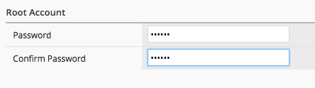

F5 BIG-IQ & Cloud Edition Lab > Class 2: BIG-IQ Deployment with auto-scale on AWS, Azure & VMware (Cloud Edition) > Module 1: Setup a Service scaling group (SSG) in VMWARE Source | Edit on
Lab 1.1: Setup a device template¶
The first thing to setup to be able to deploy Service Scaling Group (SSG) is
to setup a device template
A device template contains all the configuration items that should be pushed on a newly provisioned F5 Virtual edition:
Hostname (prefix/Serial Number/suffix)
Default route (if you don’t use DHCP)
Management port (may vary if you use VMWare - 443 - or AWS - 8443 -)
License
Modules to provision
VLANs
Self-IPs
User accounts
In this lab, we will create a device template that will be used for our SSG
License Pool Setup¶
Your BIG-IQ should already have a license pool setup.
Connect to your BIG-IQ (as admin)and go to : Devices > License Management > Licenses
Here you should see a license pool called byol-pool

IP Pools Setup¶
When you provision dynamically new F5 virtual edition, you need to be able to
automatically assign Self IPs to this instance. To do that, we will rely on
the IP Pool feature of BIG-IQ
For our lab, we will need two IP pools:
One for the network between Tier1 (
Service Scaler) and Tier2 (SSG)One for the servers network
Go to Devices > IP POOLS, you should see two already defined IP Pool:
external
internal

Device Template Setup¶
To create your Device Template, go to Devices > Device Templates and click on Create
you should see this:

Click on the button Add/remove to select the configuration items you want to
enforce when deploying a new F5 virtual edition in your SSG
Here, for the Provider Type, select VMWare. It will automatically select
all the required information related to a VMWare environment (in regards to Using
Service Scaling Group)
Note
[New 6.0.1] The Provider selection has been moved to Template Properties section in the device template.
{kind=link}
Click OK. You’ll see new tabs under the Objects column.
In the Name field, specify your Device Template name: SSGSetupClass2
{kind=link}
Click on the configuration tab , DO NOT CLICK SAVE YET or you’ll lose the unconfigured tabs

Setup the configuration tab like this:
Hostname Components:
Default Route: LEAVE EMPTY
Management port: 443
Check Text (prefix) and put: SSGClass2-
Check Serial Number
Check Text (suffix) and put: .f5demo.local
Click on the License tab and setup the following:
License Type : Select Purchased Pool
License Name: Select byol-pool
{kind=link}
Click on the Provisioning tab,
Select the module Local Traffic Manager (LTM) and set it to Nominal
Select the module Application Visibility and Reporting and set it to Minimum
Select the module Application Security (ASM) and set it to Nominal
{kind=link}
Click on the DNS & NTP tab and setup the following:
Lookup Servers: 8.8.4.4
NTP Server: pool.ntp.org
Timezone: America/Los_Angeles

Note
[New 6.0.1] IP Pool can be used for the management IP. See BIG-IQ documentation for more information (the VM template need some pre-work).
[New 6.0.1] Click on the DManagement IP tab and setup the following:
IP Address: DHCP
{kind=link}
Click on the VLANs tab. You should see a vlan defined by default: external.
Note
When you create/update a VLAN, you’ll see the interface 1.1 being pre-populated. In fact, it is showed as an example. You need to type the interface yourself -ie 1.1 / 1.2 / …
Click on the Add button:
Name: internal
Tag: EMPTY
Interface: 1.2
Click on the Save and Close button. Click on the external vlan and assign the interface 1.1 to it.

Click on the Self IP’s tab. You should see a Self IP defined called external. Click on the Add button:
Name: internal
IP Address: IP Pool > Select internal
VLAN: internal
Port lockdown: Allow None
{kind=link}
Click on the Save and Close button. Click on the external self ip to set it up
Name: external
IP Address: IP Pool > Select external
VLAN: external
Port lockdown: Allow None
{kind=link}
Note
The external self IP is important because this is the self IP we will use
to LB traffic between our tier1 (Service Scaler) and tier2 BIG-IPs (SSG).
You need to use it as is. if you don’t use a external self IP on your
tier2 device, BIG-IQ won’t know which interface to use
Click on the Root Account tab. Specify a new password for the root account: purple
Click on the User Accounts tab. You will see the admin user. Click on the Admin user.
Role: select Administrator
Username: admin
Password: purple
Confirm Password: purple
{kind=link}
Click on the button Save & Close, Click on the button Save & Close again
You should see your Device Template available now.